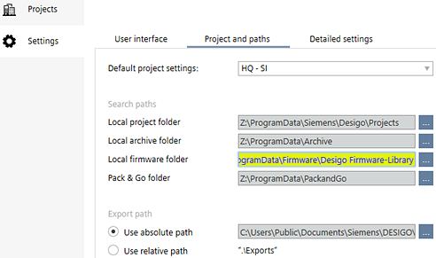
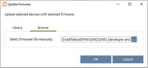
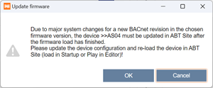

更新工程设备的固件
使用此过程可从库或浏览至固件文件来更新固件。所有固件版本均发布在官方“Desigo 固件库”中。将 Desigo Firmware Library 下载到您的计算机，并设置文件夹路径Project Manager > Settings > Project and paths > Local firmware folder.
Settings
此任务支持质量负载。它不允许在房间单元上加载固件和应用程序类型。执行检查以确保所有选定的设备属于同一类型并确定文件兼容性。附加语言文件（文本组）只能加载到运行非预加载应用程序的控制器。设备执行设备实例数据的备份（根据需要）并在更新后恢复，但应用程序类型除外（用户必须重新加载配置）。

RDG2 固件只能由授权的西门子员工更新。无法通过 Desigo PXC4/5/7. 更新固件
对于操作和监控设备，请确保在执行固件更新之前先上传设备配置，然后更新设备。
Uploading a device configuration
Updating application templates and graphics libraries

Update firmware from library
- Desigo V6 firmware is required. The Discovery and Node Setup Tool (DNT) must be used for Desigo V5 and V5.1 firmware.
- Update files (Desigo Firmware Library) are available on the computer.
- Go to Startup.
- Open the Configure and download task.
- Select the Engineered devices or Discovered devices tab.
- In the Engineered devices tab, right-click the building or device to be updated and select Load > Firmware.
- In the Discovered devices tab, right-click the device to be updated and select Firmware.
- Select the Library tab.

- Select the device type and the firmware version from the corresponding drop-down list.
- (Optional) Click View Release Notes for more information about the selected firmware version.
- Click OK.
- The device firmware is updated. The update process might take a while. Wait for the device to restart.
Update firmware from file
请更新设备配置并在 ABT 站点中重新加载设备（在启动中加载或在编辑器中播放）！通过固件更新，不再需要对 PXM40.E、PXG3.W100-2 和 PXG3.W200-2 器件执行清除器件操作。更新后，设备还必须在 ABT 站点中进行更新。
固件更新期间所有设备的行为都是相同的。
- Update files are available on the computer.
- Firmware of WAN device must be updated from the LAN port.
- Go to Startup.
- Open the Configure and download task.
- Select the Engineered devices or Discovered devices tab.
- In the Engineered devices tab, right-click the building or device to be updated and select Load > Firmware.
- In the Discovered devices tab, right-click the device to be updated and select Firmware.
- Select the Browse tab.

- Click Browse to locate the firmware source files manually.
- Select a firmware bundle file (.fmwz) and click Open.
- Click OK.
- The Firmware update dialog box displays.

Due to major system changes for a new BACnet revision in the chosen firmware version, the device must be updated in ABT Site after the firmware load has finished.
Update the device configuration and re-load the device in ABT Site (load in Startup or Play in the editor)! - Click OK.
- The device firmware is updated. The update process might take a while. Wait for the device to restart.
- A full load is required.